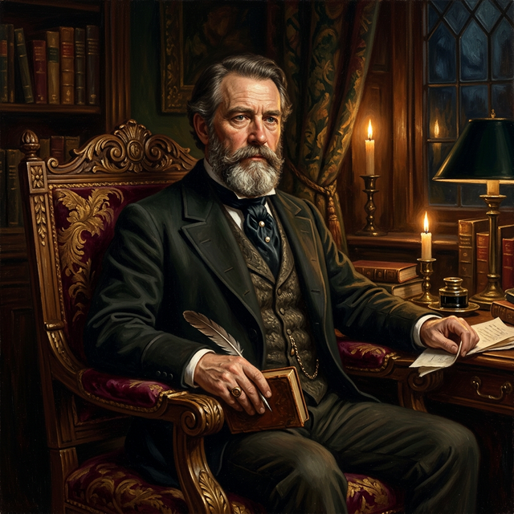

The Father of the Sensation Novel
"I have always held the old-fashioned opinion that the primary object of a work of fiction should be to tell a story."
Discover His StoryWilliam Wilkie Collins (1824–1889) shattered the conventions of Victorian fiction, weaving tales of mystery, suspense, and social commentary that continue to captivate readers to this day.
Born into a world of art and privilege as the son of the celebrated landscape painter William Collins RA, Wilkie Collins would grow to become one of the most innovative and widely read novelists of the nineteenth century. His masterworks — The Woman in White and The Moonstone — are credited with inventing the sensation novel and the detective novel respectively.
Yet Collins was far more than a mere entertainer. Beneath the gripping plots and labyrinthine mysteries lay a fierce intelligence and a radical social conscience. He championed the rights of women, challenged the rigid class structures of his age, and lived a private life as unconventional as any of his fictional creations.
This website invites you to explore every facet of this extraordinary man — his art, his world, his loves, and his legacy.

Delve into the many dimensions of Wilkie Collins — from his ground-breaking novels to his most intimate relationships.
From his birth in Marylebone to his final resting place at Kensal Green — discover the arc of a remarkable life lived against convention.
Explore The Woman in White, The Moonstone, No Name, Armadale, and the full canon of novels, plays, and stories.
His legendary friendship with Charles Dickens, joint theatrical ventures, and connections with the Pre-Raphaelite Brotherhood.
Two households, two women, three children — the unconventional domestic world that scandalised Victorian society.
Industrialisation, empire, social reform — the turbulent age that shaped Collins and which he, in turn, interrogated through fiction.
An interactive chronology of key events from 1824 to 1889, enriched with images, milestones, and historical context.
Published Novels
Years of Life (1824–1889)
Plays & Collaborations
Published in serial form in Dickens's journal All the Year Round, The Woman in White was an instant sensation. Its intricate plot — revolving around identity theft, false imprisonment, and a terrifying conspiracy — held Victorian readers spellbound week after week.
The novel pioneered the use of multiple narrators, each telling their portion of the story as though giving testimony in a court of law. Its unforgettable characters — the sinister Count Fosco, the courageous Marian Halcombe, and the ethereal Anne Catherick — remain iconic figures of English literature.
"This is the story of what a Woman's patience can endure, and what a Man's resolution can achieve." — Opening lines of The Woman in White
The novel's extraordinary success made Collins one of the highest-paid authors in England and cemented his reputation as the master of the sensation novel.
Widely regarded as the first true detective novel in the English language, The Moonstone introduced narrative techniques and plot devices that would become staples of the mystery genre: the country-house setting, a bumbling local detective contrasted with a brilliant investigator, the reconstruction of events, and the least-likely-suspect twist.
The story follows the disappearance of a priceless Indian diamond — the Moonstone — bequeathed to Rachel Verinder on her eighteenth birthday. Through the testimonies of multiple narrators, Collins unravels a mystery that spans continents and social classes.
"I am not a groping, blindfold sort of man. I see my way through a difficulty as quickly as the best of them." — Sergeant Cuff, The Moonstone
T. S. Eliot would later call it "the first, the longest, and the best of modern English detective novels."